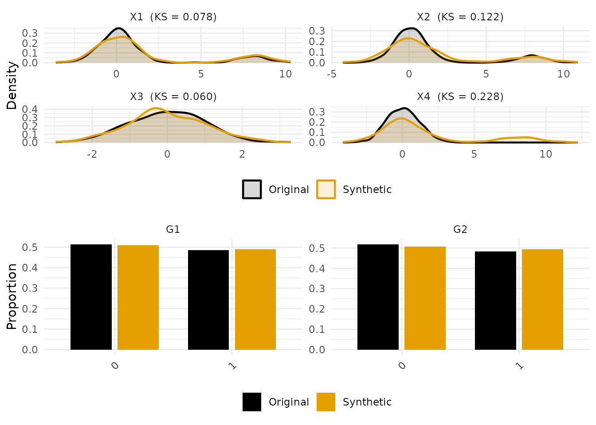
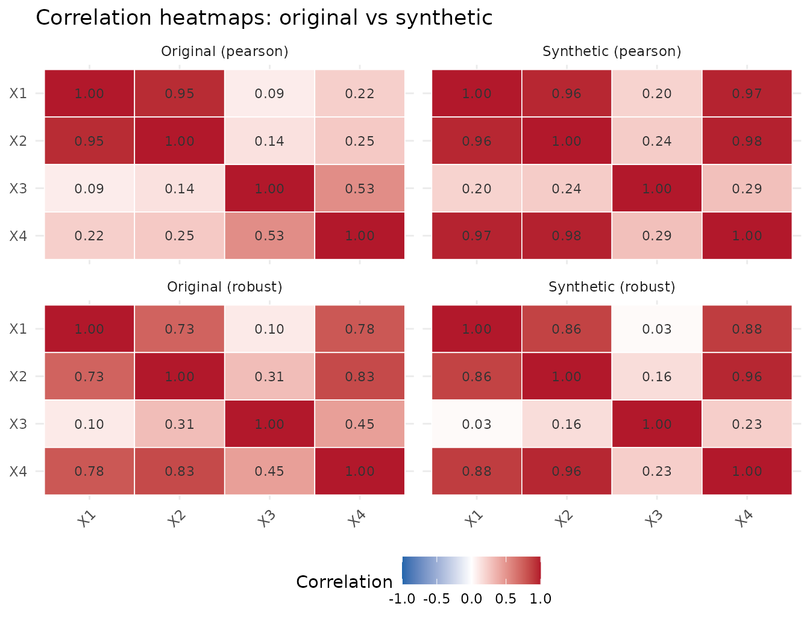
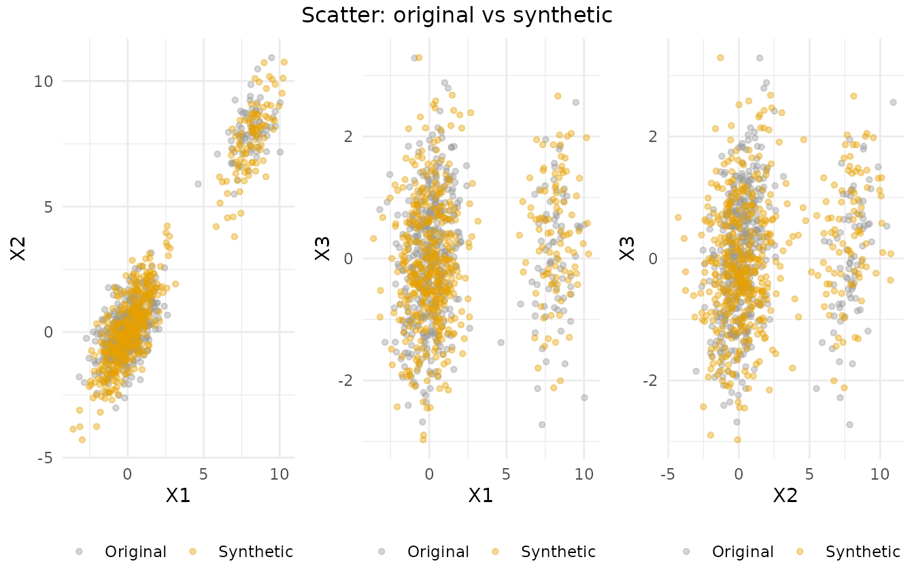
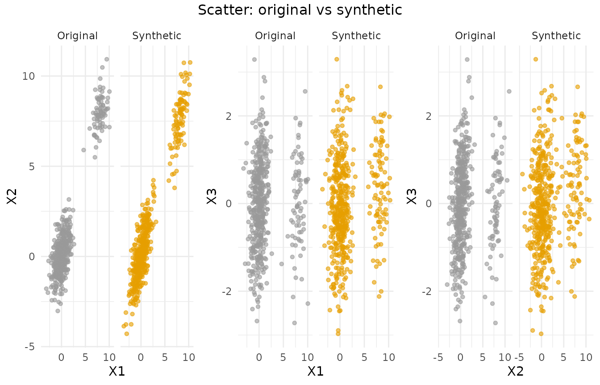

robSynth: Robust Synthetic Data Generation
Matthias Templ
2026-04-21
Source:vignettes/robSynth-intro.Rmd
robSynth-intro.RmdAbstract
robSynth generates synthetic microdata in the presence of contaminated training data. Standard sequential synthesisers such as synthpop (Nowok, Raab, and Dibben 2016) and simPop (Templ et al. 2017) use OLS or CART to model each variable; when the training data contains outliers, coding errors, or linkage mismatches, each conditional model is distorted and the distortion compounds through subsequent variables. robSynth replaces these models with MM-estimation (Yohai 1987; Maronna et al. 2019) for continuous variables and Huber-weighted logistic regression for categorical variables, and extends the toolbox with robust tree-based methods (median-leaf CART, OOB-residual-weighted random forest, pseudo-Huber XGBoost). The package supports per-variable methods, custom predictor matrices, survey weights, hierarchical (household) data, multiple synthesis with Reiter’s partial-synthetic combining rules (Reiter 2003), robust Box-Cox transformations (Box and Cox 1964; Marazzi and Yohai 2006), utility diagnostics (pMSE, KS, regression preservation, correlation-Frobenius distance) and disclosure-risk assessment (k-anonymity, closest-record distance, TCAP, and RAPID (Thees, Mueller, and Templ 2025)). This vignette walks a statistical officer or applied methodologist through the package end-to-end.
1. Introduction
Synthetic microdata are an increasingly standard release strategy for National Statistical Offices and research data centres: a generative model is fit to the real data, and the released artefact is a draw from that model rather than the records themselves. Under the conditional synthesis framework that underpins synthpop and simPop, each variable is drawn from a model , so any bias in the conditional model directly contaminates the synthetic output.
Real surveys contain messy data: typos, sentinel codes that leak unreplaced into a numeric column, linkage mismatches, and genuine extreme observations. OLS and CART have zero breakdown point — a single pathological row can drive the synthesiser arbitrarily far from the majority. robSynth’s contribution is to replace each conditional model with a bounded-influence estimator. The guarantee is qualitative: under a contaminated Gaussian model, the error of the OLS-based synthesiser grows without bound in the contamination magnitude , while the MM-based synthesiser’s error is bounded by a constant.
The remainder of this vignette is organised as follows. Section 2 describes the methods and the key formulae. Sections 3 and 4 cover installation and a worked contamination example. Sections 5–11 walk through practitioner-oriented features (output structure, method choice, per-variable methods, transformations, formulas, predictor matrix, sentinel-coded missings). Sections 12–19 cover inference and diagnostics (multiple synthesis, utility, comparison, disclosure risk, hierarchical data, survey weights, parallelisation). Sections 20–21 discuss fit-failure diagnosis and migration from synthpop. Section 22 summarises.
2. Methods
2.1 Conditional synthesis framework
Given data with variables in visit order, robSynth draws each synthetic variable from a fitted conditional model: where is trained on the original predictors (not the already-synthesised ones). A predictor matrix lets the user zero out specific conditioning variables; custom formulae allow interactions and passive relationships.
2.2 MM-estimation for continuous variables
OLS minimises
,
so a single gross outlier contributes arbitrarily much to the objective
— its leverage can drag the fitted slope to any value. MM-estimation
(Yohai 1987)
replaces the squared error with a bounded loss
:
once a residual exceeds a tuning threshold, its contribution stops
growing, and no single row can dominate. Concretely, the default
continuous method (method = "mm") fits each conditional
model by
with
the Tukey bisquare function and
an S-estimate of scale. Under Gaussian errors this achieves 50 %
breakdown point — the maximum possible fraction of arbitrary
contamination the estimator tolerates before the estimate can be driven
to infinity — and, with appropriate tuning, 95 % asymptotic efficiency
(Maronna et al.
2019).
2.3 Robust logistic regression for categorical variables
For binary targets (method = "robust_logreg"), the
default fits a GLM, computes standardised Pearson residuals
,
and refits with observation weights
where
and
otherwise. For multinomial targets, the same downweighting is applied to
a prior-standardised log-score
,
so that rare minority-class rows are not blanket-downweighted.
2.4 Robust tree-based methods
-
robust_cart: rpart-fitted tree, but leaf predictions are the weighted median of in-bag response values rather than the mean. Leaf lookup at predict time usespartykit::as.party()node IDs, so fit and predict stay in sync even when several leaves share a mean. -
robust_rf: two-pass. An initial forest produces out-of-bag residuals; rows with residual z-score are downweighted and the forest is refit. Because the flag uses conditional residuals, legitimate extreme- rows driven by are not penalised. -
robust_xgboost: XGBoost withreg:pseudohubererrorloss; training factor levels are stored viaxlevand re-used at predict time to prevent silent column-mismatch bugs when new data lacks a rare level.
2.5 Robust Box-Cox
For skewed variables the package offers
transform = list(var = "boxcox") with a robust lambda
search: the minimum of
over a grid. This is itself resistant to the outliers that motivated
transforming in the first place (Marazzi and Yohai 2006).
2.6 Multiple synthesis: Reiter’s combining rules
When
synthetic copies are generated, synth_lm() and
synth_glm() fit the analysis model on each copy and pool
the estimates. Why not simply reuse Rubin’s multiple-imputation
rules?
In classical multiple imputation the analyst’s uncertainty has
two sources: (i) sampling the population and (ii)
imputing within the sample. Rubin’s total variance is therefore
,
where
accounts for imputation variability and the
accounts for the sampling step having been performed once.
Synthetic data generated by robsynth() has
only source (ii) — the analyst already conditions on
the original sample, so there is no additional sampling uncertainty to
absorb. Applying Rubin’s rules therefore inflates the variance by a
factor proportional to
,
producing intervals that are anti-conservative in the reverse direction:
wider than they should be.
Reiter (Reiter 2003) replaces by , scaling the between-copy variance down because it reflects only synthesis noise: The degrees-of-freedom formula inflates when (synthesis noise small relative to within-copy variance) and shrinks when (synthesis adds substantial noise). Single-copy synthesis () sets exactly and recovers the ordinary single-dataset variance with .
3. Installation
robSynth is distributed from GitHub. A CRAN release is planned once the companion paper is accepted.
# install.packages("remotes")
remotes::install_github("matthias-da/robSynth")Several methods rely on optional backends listed under
Suggests in the DESCRIPTION: partykit (for
ctree and for robust_cart prediction),
ranger (for robust_rf), xgboost
(for robust_xgboost), and riskutility (for
mixed-type disclosure measures). Install them on demand:
install.packages(c("partykit", "ranger", "xgboost", "riskutility"))The remainder of the vignette assumes you have run
library(robSynth) in your R session — the code chunks do so
at the start of the worked example. Every subsequent example builds on
the data frame df created in Section 4, so it is best to
read the sections in order on first pass.
4. A worked example: robust vs non-robust under contamination
This is the flagship demonstration. We generate a clean dataset with
a known linear structure, deliberately contaminate 15 % of the rows with
a large outlier shift, and then run two synthesisers side by side:
robsynth() with its robust default (MM for continuous,
robust-weighted logistic for categorical) and with
method = "parametric" (OLS for continuous, plain logistic
for categorical — the classical synthpop-style
recipe).
The comparison is made against a known ground truth — the regression coefficients of on — which is fair because we built the data to have that structure. In a real application you would not have a ground truth; Section 13 discusses the “contamination paradox” you face when comparing against the contaminated training data alone.
4.1 Generating the clean data
We build a small synthetic population of 500 records with four continuous variables and two binary covariates. Unlike a typical “independent normals” textbook example, here are drawn jointly from a correlation structure that looks like something you might see in a survey — are strongly correlated (), moderately (), mildly (). is a linear function of the three continuous predictors with additive Gaussian noise; the factors are logistic in and respectively, so they are also correlated with the continuous variables. This is enough structure to make Figures 1–3 in Section 15 tell a non-trivial story.
library(robSynth)
set.seed(42)
n <- 500
# Correlation structure for (X1, X2, X3)
Sigma <- matrix(c(1.0, 0.5, 0.3,
0.5, 1.0, 0.4,
0.3, 0.4, 1.0), nrow = 3, byrow = TRUE)
X123 <- MASS::mvrnorm(n, mu = c(0, 0, 0), Sigma = Sigma)
df <- data.frame(X1 = X123[, 1], X2 = X123[, 2], X3 = X123[, 3])
# True relationship: X4 = 0.5*X1 + 0.5*X2 + 0.3*X3 + noise
df$X4 <- 0.5 * df$X1 + 0.5 * df$X2 + 0.3 * df$X3 + rnorm(n, sd = 0.5)
df$G1 <- factor(rbinom(n, 1, plogis(0.3 * df$X1)))
df$G2 <- factor(rbinom(n, 1, plogis(0.3 * df$X2)))4.2 Contaminating 15 % of the rows
We store the clean data in df_clean
before injecting contamination, so we can later measure
utility against the truth. The contamination itself is a
block-shift scenario: the same 75 rows (15 % of
)
get
added to
and
simultaneously, and their
label is flipped. This is a fairly severe attack — eight standard
deviations is far from typical “data entry” error, but it makes the
robust-vs-non-robust contrast visually obvious. Section 4a below repeats
the exercise with a gentler cellwise pattern that is closer to real
surveys.
Note the factor-flip idiom: we capture the original two-level set
with levels(df$G1) and re-factor with the same
levels = ... to avoid silently re-coding the factor. This
is the kind of subtle bug that contamination-injection code tends to
introduce.
# Store clean version BEFORE contaminating (so factor levels are preserved)
df_clean <- df
# 15 % contamination: +8 on X1 and X2; flip G1 on the same rows
idx <- sample(n, 75)
df$X1[idx] <- df$X1[idx] + 8
df$X2[idx] <- df$X2[idx] + 8
g1_lev <- levels(df$G1)
flipped <- ifelse(df$G1[idx] == g1_lev[1L], g1_lev[2L], g1_lev[1L])
df$G1[idx] <- factor(flipped, levels = g1_lev)4.3 Robust vs non-robust synthesis, averaged over 5 replications
We now generate five synthetic copies with each method, fit the same
regression on each copy, and record two utility numbers per replication:
the root-mean-square error of the recovered regression coefficients
against the known truth (RMSE-beta), and the Frobenius norm
of the gap between the original-clean and synthetic correlation matrices
(Correlation-Frob.). Five replications is enough to see the
pattern without making the vignette slow to knit; a real benchmark would
use hundreds.
# 5 replications (keeps the vignette knit under ~10 s)
true_coef <- c(X1 = 0.5, X2 = 0.5, X3 = 0.3)
R <- 5
rmse_mm <- rmse_ols <- cor_mm <- cor_ols <- numeric(R)
for (r in seq_len(R)) {
s_mm <- robsynth(df, seed = r)$synth # robust default
s_ols <- robsynth(df, method = "parametric", seed = r)$synth # OLS / plain logistic
fit_mm <- coef(lm(X4 ~ X1 + X2 + X3, data = s_mm))[c("X1","X2","X3")]
fit_ols <- coef(lm(X4 ~ X1 + X2 + X3, data = s_ols))[c("X1","X2","X3")]
rmse_mm[r] <- sqrt(mean((fit_mm - true_coef)^2))
rmse_ols[r] <- sqrt(mean((fit_ols - true_coef)^2))
cor_mm[r] <- sqrt(sum((cor(df_clean[, 1:4]) - cor(s_mm[, 1:4]))^2))
cor_ols[r] <- sqrt(sum((cor(df_clean[, 1:4]) - cor(s_ols[, 1:4]))^2))
}
tab <- data.frame(
Method = c("MM (robust)", "OLS (parametric)"),
`RMSE-beta` = c(mean(rmse_mm), mean(rmse_ols)),
`Correlation-Frob.` = c(mean(cor_mm), mean(cor_ols)),
check.names = FALSE
)
knitr::kable(tab, digits = 3,
caption = "Table 1: Mean utility over 5 synthetic replications.")| Method | RMSE-beta | Correlation-Frob. |
|---|---|---|
| MM (robust) | 0.036 | 0.985 |
| OLS (parametric) | 0.415 | 1.269 |
Reading the table. On RMSE-, MM preserves the true regression coefficients of on much better than OLS: the contaminated rows pull OLS slopes toward the shifted cloud (this is the classical attenuation bias — the least-squares fit tries to accommodate both the bulk and the shifted block at once), while MM’s bounded -function limits each contaminated row’s contribution to the objective. On the correlation-Frobenius distance the ranking is more muted, because this metric averages over all 16 pairwise entries of the correlation matrix, and only the -related entries are affected. Take-away: the right utility metric depends on what you will do with the synthetic data. If the downstream analysis is a regression, RMSE- is the right target; if it is a correlation-based exploratory analysis, the Frobenius gap is. Section 22 returns to the population-level story; the single-replication ranking here is not a population claim.
4a. Cellwise scenario: response-side outliers
The contamination in §4.2 was block: the same 15 % of rows were shifted on and simultaneously. Block contamination is easy to catch because whole rows misbehave — any row-level Mahalanobis test will flag them. In real data, however, contamination is typically cellwise (Raymaekers and Rousseeuw 2024): a data-entry typo in on row 42, a measurement glitch in on row 103, a sentinel code leaked into on row 350. The bad cells are mostly on different rows.
For this section we focus on the cleanest cellwise case: 10 % of response-side cells are shifted (here, cells of which is the response in the evaluation regression). A reasoning note on why this particular setup matters is given below the code.
set.seed(11)
df_cw <- df_clean
cell_prob <- 0.10
flip <- runif(nrow(df_cw)) < cell_prob
df_cw$X4[flip] <- df_cw$X4[flip] + 15 # response-side outliers
R_cw <- 5
rmse_mm_cw <- rmse_ols_cw <- numeric(R_cw)
for (r in seq_len(R_cw)) {
s_mm_cw <- robsynth(df_cw, seed = r)$synth
s_ols_cw <- robsynth(df_cw, method = "parametric", seed = r)$synth
rmse_mm_cw[r] <- sqrt(mean((coef(lm(X4 ~ X1 + X2 + X3, data = s_mm_cw ))[2:4]
- true_coef)^2))
rmse_ols_cw[r] <- sqrt(mean((coef(lm(X4 ~ X1 + X2 + X3, data = s_ols_cw))[2:4]
- true_coef)^2))
}
tab_cw <- data.frame(
Method = c("MM (robust)", "OLS (parametric)"),
`RMSE-beta` = c(mean(rmse_mm_cw), mean(rmse_ols_cw)),
check.names = FALSE
)
knitr::kable(tab_cw, digits = 3,
caption = "Table 1b: Cellwise response contamination (10 %, shift = 15; mean over 5 replications).")| Method | RMSE-beta |
|---|---|
| MM (robust) | 0.035 |
| OLS (parametric) | 0.548 |
Why this demo is cleaner than predictor-side
cellwise. robSynth()’s sequential recipe fits MM
on each conditional model
.
MM bounds the influence of
-outliers,
so when
(the response in its own conditional regression) has cellwise-shifted
values, MM downweights them and the fitted slopes stay near the truth.
The downstream evaluation regression
lm(X4 ~ X1 + X2 + X3, data = synth) then recovers the true
coefficients, and OLS synthesis — which was not robust at the
fitting step — does not.
Why predictor-side cellwise is harder. Contamination
in the predictor
is a different problem. The first variable in the visit sequence is
drawn marginally from the empirical distribution (a weighted
resample + kernel bandwidth), and the marginal draw is
not robust to cellwise outliers in that variable — the
10 % of shifted
cells get sampled into the synthetic
.
MM on subsequent conditional models handles the response side, but the
contamination in
remains and propagates. If you want full cellwise protection across all
variables, use method = "robust_rf" or
method = "robust_xgboost" (which downweight outliers inside
tree fits) or pre-process the original data with a cellwise filter
(e.g. DDC, cellMCD) before calling robsynth(). The
companion paper [Templ 2026, submitted] discusses these trade-offs; full
cellwise preprocessing integrated into robsynth() is
planned for a future release.
5. What robsynth() returns
Calling robsynth(df) returns a list-of-class
"robsynth" bundling the synthetic data together with the
configuration and the fitted conditional models. The
print() method summarises the object without dumping the
full synthetic data frame.
res <- robsynth(df, seed = 1)
print(res)
#> robSynth result
#> Variables: 6 ( 4 continuous, 2 categorical )
#> Synthetic n: 500
#> Methods: mm, robust_logregFor almost every downstream use you only need $synth.
The other components are kept for auditing, reproducibility, and
diagnostics:
-
$synth— the synthetic data frame (a list of data frames whenm > 1). Factor levels match the original, NAs fromcont.naare propagated, and you can write it straight to CSV withwrite.csv(res$synth, ...). -
$original— the training data stored verbatim. Convenient because diagnostic functions likeutility(res)pull it automatically; remove withstrip_diagnostics(res)before releasing the synthetic copy to external users, or you would effectively be releasing the training data along with it. -
$m,$method,$visit.sequence,$predictor.matrix,$transform_info— the configuration used for the synthesis, exactly as resolved at call time. Useful as a self-documenting audit trail. -
$models— the fitted conditional models from the last synthetic copy.str(res$models, max.level = 1)gives a quick overview. Inspect these when a synthetic column looks suspicious (Section 20 on convergence failures); do not release them because they encode information about the original data. -
$var_types— named character vector with"continuous"or"categorical"per column. Useful for downstream scripts that need to handle the two types differently.
In practice the idiom is:
res <- robsynth(df, seed = 1)
write.csv(res$synth, "synthetic_release.csv", row.names = FALSE)
save(strip_diagnostics(res), file = "synthetic_release.rda")6. Choosing a method
The defaults (mm for continuous,
robust_logreg for categorical) work well for the typical
“messy official-statistics” case; the other ten methods exist for
specific problems. Use the following rules of thumb as a starting point
and refine based on utility() diagnostics:
-
Clean data, linear structure →
norm(parametric, fastest) orcart(captures non-linearities). If you are confident there is no contamination, there is no reason to pay the overhead of robust estimators. -
Contaminated continuous with linear structure →
mm(the default). This is the sweet spot: the linear form is correctly specified and the robustness buys you protection against the outliers. -
Contaminated continuous, non-linear →
robust_rf(two-pass random forest with OOB-residual weights) orrobust_xgboost(pseudo-Huber loss). Userobust_rfwhen interpretability matters,robust_xgboostwhen you need to push predictive performance and are willing to pay the fit cost. -
Heavy-tailed or skewed continuous →
mmcombined withtransform = list(var = "boxcox")(Section 8). The robust Box-Cox lambda estimator (robust_boxcox_lambda) is itself resistant to the outliers that motivated the transformation. -
Binary or multinomial with rare classes →
robust_logreg(default). For clean multi-level data without concern for contamination,polyregis faster. -
Strictly derived variable
(e.g. , or a total income that
is the sum of components) →
passivewith aformulasentry (Section 9). Never synthesise a derived quantity directly; synthesise its components and re-derive. -
Variables that must be kept verbatim
(e.g. geographic region, year-of-birth for epidemiology cohorts) →
sample(marginal resampling) on those variables; leaves the variable identical to a bootstrap of the original values.
When in doubt, run robsynth() with the default and
inspect utility(res) against clean data (Section 13). If
the pMSE is much larger than the theoretical null
,
try robust_rf or robust_xgboost — a large pMSE
typically flags a missed non-linearity rather than a contamination
issue.
You can also mix methods across variables (Section 7), which is the right move whenever different columns have different problems.
7. Per-variable methods
The method argument accepts either a single string
(applied to all variables of the appropriate type) or a named
character vector whose names match the columns of
data. The example below pairs different backends to
different columns: X1 gets plain MM, X2 gets
the two-pass random forest because we suspect a non-linear conditional
mean, X3 gets gradient boosting, and the factors get
logistic regression — robust on
(we flipped it earlier, so it is contaminated) and plain on
(untouched).
Anything you leave unnamed gets the corresponding default: continuous
columns fall back to mm, categorical columns to
robust_logreg. That lets you override only the variables
you have an opinion about.
res2 <- robsynth(df,
method = c(X1 = "mm", X2 = "robust_rf", X3 = "robust_xgboost",
X4 = "mm", G1 = "robust_logreg", G2 = "logreg"),
seed = 1)
res2$method
#> X1 X2 X3 X4
#> "mm" "robust_rf" "robust_xgboost" "mm"
#> G1 G2
#> "robust_logreg" "logreg"The table below summarises the backends and their optional package
dependencies. The robust variants in bold are the ones
you will typically want under contamination; the non-robust classics are
kept for compatibility with synthpop / simPop
pipelines.
| Method | Type | Robustness | Requires |
|---|---|---|---|
"mm" |
Continuous (default) | MM-estimation, 50 % breakdown | — |
"robust_cart" |
Both | Median leaves (partykit node IDs) + MAD scale | partykit |
"robust_rf" |
Both | Case-weighted by OOB-residual magnitude (y-outliers conditional on X) | ranger |
"robust_xgboost" |
Both | Pseudo-Huber loss, xlev-aligned predict | xgboost |
"robust_logreg" |
Categorical (default) | Standardised-Pearson downweighting | — |
"norm" |
Continuous | Standard OLS (no robustness) | — |
"cart" |
Both | Standard CART | — |
"ctree" |
Both | Conditional-inference tree | partykit |
"logreg" / "polyreg"
|
Categorical | Standard logistic / multinomial | — |
"sample" |
Both | Marginal resampling | — |
"passive" |
Derived | Deterministic formula | — |
Packages listed under Requires are in
Suggests; install them on demand for the corresponding
method. If the package is missing, robsynth() errors with
an informative message rather than silently falling back.
8. Transformations for skewed variables
Many real variables (income, reaction times, counts, distances) are
heavily skewed. MM-estimation assumes approximately symmetric
conditional errors, so fitting mm directly on an income
variable will systematically mis-fit the right tail. The standard remedy
is a Box-Cox transform (Box and Cox 1964) before synthesis and
an inverse transform on the synthetic output.
The classical Box-Cox lambda is estimated by maximum likelihood,
which is itself sensitive to outliers — exactly the situation we are
trying to robustify against. robust_boxcox_lambda()
minimises a robust skewness proxy,
,
over a user-specified grid (Marazzi and Yohai 2006).
In the example below we add an income-like variable via
rlnorm(), inflate the already-contaminated rows tenfold to
create a heavy tail, and let
transform = list(income = "boxcox") pick the lambda
automatically. lambda near 0 corresponds to the log
transform, which is the expected answer for a log-normal input.
set.seed(123)
df$income <- rlnorm(n, 10, 0.5)
df$income[idx] <- df$income[idx] * 10 # contaminate
# Robust Box-Cox normalises before synthesis, back-transforms after
res3 <- robsynth(df, transform = list(income = "boxcox"), seed = 1)
cat("Estimated lambda:", res3$transform_info$income$lambda, "\n")
#> Estimated lambda: -0.8
# Lambda near 0 = log-transform (expected for log-normal data)Supported transforms are "log" and "sqrt"
(fixed), and "boxcox" (estimated). Each is applied to the
original column before fitting any conditional model,
and the inverse is applied after synthesis — so the synthetic income
column is on the original scale. The shift used to guarantee strict
positivity is recorded in res3$transform_info so downstream
consumers can reverse the transform manually if needed.
9. Custom formulas and visit sequence
visit.sequence controls the order in which variables are
synthesised. Each variable is conditioned on the variables that come
before it in the sequence. The default visit order matches the
order of columns in data, which places categorical
covariates after the continuous variables — sometimes you want
the opposite (e.g. synthesise demographic factors first so that
continuous variables can condition on them).
formulas overrides the default “right-hand side = all
prior variables” rule for individual variables. In the example below,
the X3 = ~ X1 * X2 + G1 entry tells the synthesiser to
condition
on the interaction between
and
plus the factor
,
instead of the default additive conditioning on all prior variables.
This is the cleanest way to inject interactions, polynomials, or
passive-style relationships.
res4 <- robsynth(df,
visit.sequence = c("G1", "G2", "X1", "X2", "X3", "X4", "income"),
formulas = list(X3 = ~ X1 * X2 + G1),
transform = list(income = "log"),
seed = 1)Only variables mentioned in formulas get a custom
formula; every other variable keeps the default. If your analysis model
has many interactions, specify them here rather than trying to encode
them via the predictor matrix in Section 10 — a formula is expressive
where a matrix is binary.
10. Custom predictor matrix
The predictor matrix is the familiar
synthpop / mice idiom for specifying
which variables condition which. Row
of the matrix is the in-list for variable
:
a
in column
means “include
as a predictor when synthesising
”.
By default the matrix is lower-triangular with respect to
visit.sequence, so each variable conditions on all its
predecessors.
Why override the default? Three common reasons:
- Prevent leakage of a sensitive conditioning variable (e.g. you want income synthesised without conditioning on geographic region, to break a disclosure path).
- Avoid multicollinearity when two predictors are nearly identical.
- Enforce domain assumptions (e.g. “BMI is only allowed to depend on weight and height, not on education”).
In the example below we keep the default lower-triangular
conditioning for every variable except X4, which we
restrict to depend on
only — dropping G1 and G2 which the default
would otherwise include.
p <- ncol(df)
pm <- matrix(0L, p, p, dimnames = list(names(df), names(df)))
pm[lower.tri(pm)] <- 1L # default lower-triangular
pm["X4", ] <- 0L # override X4's row:
pm["X4", c("X1", "X2", "X3")] <- 1L # condition on X1, X2, X3 only
res_pm <- robsynth(df, predictor.matrix = pm, seed = 1)Two quick gotchas:
- If row
is all zeros,
is synthesised marginally (no conditioning) using the
"sample"fallback — this is sometimes useful deliberately but usually indicates an oversight. - The matrix must be compatible with the visit sequence: you cannot
condition
on
if
is visited after
.
robsynth()does not reorder for you.
11. Sentinel-coded missing values (cont.na)
Many NSO datasets encode “refused”, “don’t know”, or “not applicable”
as numeric sentinels (-9, -999,
9999, .A, .B, …) rather than
NA. If you feed such values to a synthesiser without
recoding, two bad things happen:
- Variable-type detection may flag the column as “categorical” because
of the concentration of sentinel values, or estimate its MAD from a
distribution that includes
-999points, turning the column’s scale estimate into nonsense. - The sentinel value reappears in the synthetic output — and downstream users assume it is a valid observation.
The cont.na argument recodes sentinel values to
NA before type detection and
before any scale estimator is invoked, which is the
only timing that lets the rest of the pipeline treat the sentinels
correctly. It is also equivalent to the cont.na argument in
synthpop.
df_na <- df
df_na$income[1:20] <- -9 # "refused"
res_na <- robsynth(df_na, cont.na = list(income = -9), seed = 1)
# The sentinel does not reappear in the synthetic output
any(res_na$synth$income == -9, na.rm = TRUE)
#> [1] FALSEcont.na accepts a named list whose entries map column
names to either a single sentinel value or a vector of them
(list(income = c(-9, -99, -999))). Only numeric columns are
affected; factor columns should be recoded with NA directly
before calling robsynth().
12. Multiple synthesis with combining rules
Generating a single synthetic copy is enough for many exploratory
purposes, but for valid inferential statements the analyst
needs multiple copies plus pooling rules that account for synthesis
uncertainty. Set m > 1 in robsynth() and
use synth_lm() / synth_glm() to fit a model on
each copy and return Reiter-pooled estimates, standard errors, and
degrees of freedom.
res5 <- robsynth(df[, 1:6], m = 5, seed = 1)
fit <- synth_lm(X4 ~ X1 + X2 + X3, res5)
pooled <- data.frame(
term = names(fit$coefficients),
coef = round(fit$coefficients, 4),
se = round(fit$se, 4),
df = round(fit$df, 1)
)
knitr::kable(pooled, row.names = FALSE,
caption = "Table 2: Reiter (2003) partially-synthetic combined estimates (m = 5).")| term | coef | se | df |
|---|---|---|---|
| (Intercept) | -0.0007 | 0.0266 | 451.8 |
| X1 | 0.4874 | 0.0291 | 46.2 |
| X2 | 0.5364 | 0.0290 | 65.7 |
| X3 | 0.2881 | 0.0270 | 67.4 |
Interpretation:
-
coefis the mean of the five per-copy OLS estimates. If the synthesiser recovers the true structure, these should be close to the true for . -
seis . The part is what you would see on a single copy; adds the synthesis uncertainty. With copies, this extra contribution is modest when the synthesiser is stable. -
dfcomes from and can be very large when dominates (confidence intervals then use the normal quantiles in the limit).
How many copies do you need? A useful heuristic:
is enough for publication-quality estimates;
reduces the between-copy noise perceptibly; larger
gives diminishing returns. Reiter’s total variance
reduces to
as
;
with a single synthetic copy
()
the between term vanishes exactly, df becomes infinite, and
the standard errors reduce to those of an ordinary single-dataset
regression.
Set n_cores > 1 (Section 19) to parallelise across
copies when m is moderate-to-large; the per-draw seed
machinery guarantees that seed = k with
n_cores = 4 produces identical output to
seed = k with n_cores = 1.
13. Utility assessment
Important — the contamination paradox.
utility()compares the synthetic data against its stored$original, which is the contaminated training data. A successful robust synthesiser produces synthetic data closer to the clean distribution than the training data was, so against the contaminated baseline it can look “worse” — its regression coefficients are in the right place, but the contaminated OLS baseline’s coefficients are not, so the CIs do not overlap. Always compute utility against a clean reference when one is available.
# Match column sets: res was trained before `income` was added in Section 8
cols <- names(res$synth)
u_vs_contam <- utility(res$synth, df[, cols]) # contaminated
u_vs_clean <- utility(res$synth, df_clean[, cols]) # clean truth
data.frame(
baseline = c("contaminated training", "clean truth"),
pMSE = c(u_vs_contam$pMSE, u_vs_clean$pMSE),
reg_CI_overlap = c(mean(u_vs_contam$regression$ci_overlap, na.rm = TRUE),
mean(u_vs_clean$regression$ci_overlap, na.rm = TRUE)),
reg_rel_bias = c(u_vs_contam$regression$relative_bias,
u_vs_clean$regression$relative_bias)
) |>
knitr::kable(digits = 3,
caption = "Table 3: Utility against contaminated training data vs clean truth. The CI-overlap collapses to zero when measured against contamination because the synthesised coefficients sit near the TRUE values while OLS on the contaminated data does not.")| baseline | pMSE | reg_CI_overlap | reg_rel_bias |
|---|---|---|---|
| contaminated training | 0.038 | 0.096 | 8.601 |
| clean truth | 0.024 | 0.301 | 0.627 |
The pMSE is reported on the raw scale. Under the null of perfect synthesis the expected value is with and the total sample size; for an equal-size synthetic copy the null is . For cross-sample-size comparison, Snoke and Slavković (2018) recommend the null-scaled . Values near 1 are indistinguishable from a perfect synthesiser; larger values indicate the classifier can tell original and synthetic records apart.
Heuristic (not prescriptive) diagnostic guides for clean-baseline utility:
- Mean KS < 0.05: marginals broadly preserved.
- Correlation-Frobenius < 0.1 (divided by the number of continuous variables): joint linear structure broadly preserved.
- CI overlap near 1: inferential conclusions broadly preserved.
Compared against a contaminated baseline, all three can look much worse even when the synthetic data is objectively closer to the truth. The practical recipe:
- If a clean reference is available (e.g. pre-contamination data, a
validation pilot, a well-curated subset), run
utility(res$synth, clean_data)to measure how well the synthesiser recovers the target distribution. - If only the contaminated training data is available, treat the utility metrics as diagnostic but not absolute. Numbers that look “bad” may simply reflect that the synthesiser did the right thing and left the contamination behind.
- Always pair utility with a disclosure-risk check (Section 16). A high-utility synthetic dataset that matches the original record for record is useless — it is the original dataset.
14. Model-based comparison
utility() produces aggregate metrics that summarise the
synthetic data as a whole. Often the analyst cares about a
specific downstream model: “does my favourite regression on the
synthetic data give the same coefficients as on the original?”
compare_fit() answers exactly that. Pass any formula, and
the function fits it on both the original and the synthetic data and
reports per-coefficient differences, standardised differences, and
confidence-interval overlaps.
comp <- compare_fit(X1 ~ X2 + X3 + G1, res, df, plot = FALSE)
print(comp)
#> robSynth Model Comparison
#> =========================
#>
#> Coefficient comparison (original vs synthetic):
#>
#> Original Synthetic CI_overlap Std_diff
#> (Intercept) -0.0248 0.1453 0.300 1.945
#> X2 0.9655 0.9899 0.553 1.240
#> X3 -0.1358 -0.0739 0.627 1.036
#> G11 0.0699 -0.1654 0.297 -1.953
#>
#> Mean |standardised difference|: 1.410
#> Mean CI overlap: 0.444The two headline numbers:
- Mean CI overlap: for each coefficient, the overlap of the original and synthetic 95 % CIs is computed and the mean is reported. Values near 1 indicate near-perfect preservation; values near 0 indicate that the synthetic analysis would lead to different inferences. Reiter (2005) recommends > 0.5 as a practical threshold for “acceptable preservation”.
- Mean |standardised difference|: each coefficient’s difference divided by its pooled standard error, averaged across coefficients. Values below 2 mean the shifts are within typical sampling noise.
Both numbers are affected by the contamination paradox discussed in
Section 13: if you compare against the contaminated original, a
successful robust synthesiser looks worse than a non-robust one. For
robust synthesis, pair compare_fit() with a clean reference
when you have one.
15. Visual comparison
Aggregate numbers are necessary but never sufficient — a good synthesiser can have excellent pMSE and still miss the tails of a bimodal distribution or get the sign of a correlation wrong. The visual diagnostics below cover three complementary perspectives: univariate marginals, bivariate correlation structure, and the pairwise joint distribution. All three use the Okabe-Ito palette for colourblind safety (original = black / grey, synthetic = orange).
Figure 1 — marginals. compare() draws
overlaid densities for continuous variables and grouped bar plots for
factors. Each continuous facet label shows the Kolmogorov-Smirnov
statistic — a crude but useful scalar summary of how close the two
marginals are. What to look for: matched modes, matched tails, no
systematic shift.
if (requireNamespace("ggplot2", quietly = TRUE)) {
compare(res, df)
}
Figure 1: Marginal distributions and category proportions — original (black) vs synthetic (orange). KS statistic shown in each facet label.
Figure 2 — correlation structure, and a paradox. The natural default is to compare two heatmaps: classical Pearson correlation on the original data, classical Pearson correlation on the synthetic. But under contamination the classical original is itself biased — Pearson correlation has breakdown point zero, so a 15 % block shift can drive its off-diagonal entries to anywhere. If the robust synthesiser recovered the clean correlation structure, its classical panel will differ from the classical-original panel by design. Reading the two-panel comparison as “they should agree” punishes successful robust synthesis — the same paradox as the CI-overlap collapse in Section 13.
The 2×2 grid below lets the reader separate two independent questions. Rows = how is correlation measured (top = classical Pearson, bottom = OGK-based robust, Maronna et al. (2019)); columns = which dataset (left = original, right = synthetic).
Reading the grid:
- Top row shows what the classical analyst would see. Top-left is biased by the contamination; top-right is the synthetic Pearson correlation — which can match either the contaminated or the clean truth depending on whether the synthesiser left the contamination in.
- Bottom row is our best guess at what the clean correlation would look like. Bottom-left and bottom-right should agree with each other and with the top-right if the synthesiser did its job; only the top-left is meant to be discrepant.
- Columns (original vs synthetic within each row) show how much the dataset-construction step changed the correlation when measured consistently.
Pass include_robust_original = TRUE to
plot(..., type = "correlation") to get this 2×2 rendering
in your own diagnostics; or pass cor_method = "robust"
alone to get a two-panel robust-vs-robust comparison.
if (requireNamespace("ggplot2", quietly = TRUE)) {
plot(res, type = "correlation", original = df,
include_robust_original = TRUE)
}
Figure 2: Correlation structure — 2x2 grid of heatmaps. Rows: classical Pearson (top) vs OGK-robust (bottom). Columns: original (left) vs synthetic (right). The top-left panel is biased by contamination; the remaining three panels should agree when the robust synthesiser recovered the clean structure.
Figure 3 — pairwise joint distribution. Scatter plots of the first three continuous variables reveal whether the synthesiser captures the joint structure, not just the marginals. Two variables can have identical marginals and very different joint behaviour (correlation, tail dependence, holes in the support), so this plot is diagnostic in a way Figure 1 cannot be.
Pairwise scatter comes in two layouts: "overlay"
(default) puts both sources on a shared axis with transparency, and
"facet" places them in two side-by-side panels. Overlay is
faster to read when the two clouds differ in location: you
immediately see the orange synthetic points sitting where the grey
original points do (or do not). Facet is clearer when the clouds overlap
heavily and only their shape differs — you can see holes and
density asymmetries that the overlay smooths over. The
alpha argument controls point transparency; its default
(0.4 for overlay, 0.6 for facet) is usually
fine.
if (requireNamespace("ggplot2", quietly = TRUE)) {
plot(res, type = "scatter", original = df, layout = "overlay")
}
Figure 3a: Pairwise scatter, overlay layout — original (grey) and synthetic (orange) on a shared axis; alpha = 0.4.
if (requireNamespace("ggplot2", quietly = TRUE)) {
plot(res, type = "scatter", original = df, layout = "facet")
}
Figure 3b: Pairwise scatter, facet layout — original (left panel) and synthetic (right panel) in separate sub-plots; alpha = 0.6.
16. Disclosure risk
A synthesiser that simply returned the training data would score
perfectly on every utility metric — and would leak every record. Utility
and disclosure risk are two sides of the same coin, and any release
workflow must track both. Risk is harder to measure than utility because
it depends on the attacker: what side information do they have,
which records are they targeting, what model do they use?
disclosure() wraps several complementary measures so the
analyst gets a multi-model picture rather than betting on a single
number.
The built-in "distance" measure is a cheap first check
that works on numeric keys only: it scales each continuous key by its
MAD and reports the distribution of nearest-neighbour distances between
original and synthetic records. When the riskutility
package is installed, six additional model-based measures become
available, each capturing a different attacker model:
"rapid" (Thees, Mueller, and Templ 2025) (a
random forest attacks the sensitive attribute), "dcap"
(attribution via exact or Gower matching), "dcr"
(distance-to-closest-record with a holdout null distribution),
"delta_presence" (membership inference via
-presence),
"domias" (density-based membership inference), and
"drisk" (sdcMicro-style risk). Pass a character vector of
method names or the shorthand "all" to compute every
available measure in one call.
d_basic <- disclosure(res, df,
key_vars = c("X1", "X3"),
target_var = "X2",
method = "distance")
print(d_basic)
#> robSynth Disclosure Risk Assessment
#> ====================================
#>
#> Distance-based (numeric keys only):
#> median nearest: 0.255 q05: 0.099 % < 0.5: 90.4%
#>
#> Key vars: X1, X3
#> Target: X2The printed statistics are descriptive, not a prescription:
- median nearest close to 0 means many synthetic records sit on top of originals in quasi-identifier space — a warning sign;
- median nearest much larger than the typical within-sample spacing means the synthesiser moved records far from their training counterparts — usually a good sign for privacy, but check that utility has not collapsed;
- q05 and % below 0.5 are tail-sensitive summaries that capture whether the closest synthetic records are especially close — a small number of leaked records can dominate the risk even when the median looks healthy.
There is no universal “good” threshold; values depend on sample size, the number of quasi-identifiers, and how spread out the training data already are. Compare against a clearly-privacy-safe baseline such as a pure marginal resample to calibrate what “far” means for your data.
16a. RAPID (model-based attacker)
RAPID trains a random-forest attacker on the synthetic data and scores how well it can predict the sensitive attribute on the originals. Unlike distance-based risk, it handles mixed-type keys natively and gives a single, directly comparable [0, 1] score.
d_rapid <- disclosure(res, df,
key_vars = c("X1", "X3", "G1", "G2"),
target_var = "X2",
method = "rapid")
d_rapid$rapid16b. Multiple measures in one call
When several measures are requested, disclosure() runs
each in turn and collects the results. The example below exercises four
complementary perspectives:
d_all <- disclosure(
res, df,
key_vars = c("X1", "X3", "G1", "G2"),
target_var = "X2",
method = c("rapid", "dcap", "domias", "delta_presence"))
# access individual measures via the list components:
names(d_all)
d_all$dcapThe qualitative picture reported by these measures is usually consistent; disagreements between RAPID (model-based) and DCR (density-based) often flag issues with one of the attacker models rather than true differences in disclosure risk — for example, RAPID will show elevated scores when the synthesiser preserved a strong predictive relationship that a real attacker could also exploit, and DCR will show elevated scores when individual records are too close in Gower / Euclidean space. Triangulating across measures is safer than trusting any single one.
A typical release decision flow:
- Check utility (Section 13) against the cleanest available reference. If utility is insufficient, no release.
- Compute
disclosure(..., method = "all"). If any measure flags catastrophic risk (RAPID above 0.15, median DCR below the privacy-safe baseline, DOMIAS AUC near 1), investigate and either fix the synthesiser or withhold the release. - Publish the synthetic copy together with the disclosure numbers and the exact command that produced it (for reproducibility).
17. Hierarchical data (household / person)
Household surveys, education cohorts, longitudinal panels — many real
datasets come in two-level form where records within a cluster are not
exchangeable with records in other clusters. Naively synthesising such
data at the record level destroys the cluster structure (e.g. producing
“households” whose members’ incomes contradict the household total).
robsynth_hh() handles this with a two-phase procedure:
- Phase 1 resamples whole households with replacement. Each synthetic household keeps its member-count and its household-level variables (income, region, size) intact — these are not synthesised, they are bootstrapped.
- Phase 2 synthesises the person-level variables (age, sex, etc.) conditional on the household-level variables and previously synthesised person variables. The conditional models are fit on the original full data and predicted on the resampled household structure, which means the person-level distributions reflect the full empirical population, not just the bootstrapped households.
set.seed(1)
hh <- data.frame(
hhid = rep(1:100, each = 3),
hh_income = rep(rnorm(100, 5000, 1000), each = 3),
region = factor(rep(sample(c("A", "B"), 100, TRUE), each = 3)),
age = rnorm(300, 40, 15),
sex = factor(sample(c("M", "F"), 300, TRUE))
)
hh$hh_income[1:15] <- hh$hh_income[1:15] + 8000 # hh outliers
res_hh <- suppressMessages(
robsynth_hh(hh, hhid = "hhid",
hh_vars = c("hh_income", "region"),
person_vars = c("age", "sex"),
seed = 1)
)
print(res_hh)
#> robSynth hierarchical result
#> Households: 100
#> Persons: 300
#> HH vars: hh_income, region
#> Person vars: age, sex
all(table(res_hh$synth$hhid) == 3) # sizes preserved
#> [1] TRUE18. Survey weights
Most official-statistics microdata carry design weights that reflect the sampling scheme: stratified, multi-stage, post-stratified, raked. Ignoring these weights during synthesis can bias conditional models because units with small probability of selection are over-represented in the unweighted fit.
robsynth() accepts weights via the
weights = argument. Pass either a variable name (the column
is removed from the synthesised variables and used only as weights) or a
numeric vector of length nrow(data). Weights are propagated
to every conditional fit: MM, weighted logistic, robust tree-based
methods — all of them accept case weights and use them.
set.seed(456)
df_w <- df[, 1:6]
df_w$sampweight <- runif(nrow(df_w), 1, 10)
res_w <- robsynth(df_w, weights = "sampweight", seed = 1)
names(res_w$synth) # weight not synthesised
#> [1] "X1" "X2" "X3" "X4" "G1" "G2"Point estimates are approximately design-consistent. The standard
errors reported by lmrob are model-based,
not design-corrected; for design-based inference wrap the synthesiser in
a replicate-weights or bootstrap procedure (Lumley 2010).
19. Parallel computation
When m is large (50 bootstrap replications for a
simulation study; 20 synthetic copies for publication-quality Reiter
inference), the synthesis loop dominates the runtime. Set
n_cores > 1 to distribute the m independent
synthetic copies across CPU cores via
parallel::parLapply.
res_par <- robsynth(df, m = 20, n_cores = 4, seed = 1)Per-draw seeds (seed + 1:m) are set inside each worker
before any random draw, so the parallel and sequential paths produce
identical output under a fixed seed. This
is not the case for many other parallel R packages; if you rely on
byte-for-byte reproducibility, verify it for your specific combination
of BLAS, OS, and R version.
Practical recommendations:
- Start with
n_cores = parallel::detectCores() - 1to leave one core free for the OS. - The parallel overhead is ~1 second per worker, so parallelisation
pays off only for
min the tens with non-trivial per-copy cost. -
n_cores > 1is ignored whenm = 1.
20. Diagnosing convergence or fit failure
Warning. A
NULLentry inres$modelssignals a silent fit failure: the continuous path fell back tolm()or the categorical path fell back to marginal sampling. Always inspectsapply(res$models, is.null)before release, and re-run with an alternative method for any variable whose model isNULL.
Occasionally lmrob fails to converge (severe singular
design, fewer rows than predictors after NA omission, or a factor with a
singleton level after contamination). The default continuous path
silently falls back to lm() in that case; for categorical
paths the stored model is NULL and the generator falls back
to marginal sampling — i.e. the variable is drawn from its empirical
marginal distribution, ignoring all conditioning.
Silent fallback is deliberate: a hard error in the middle of a sequential synthesis would leave you with a partially-populated synthetic dataset. But it does mean you need to check.
Practical checks:
# after `res <- robsynth(df, ...)`:
sapply(res$models, is.null) # NULL marks silently-failed variablesRemedies for the most common failure modes:
-
Factor with a singleton class after contamination —
collapse rare classes before synthesis (
droplevels()followed byforcats::fct_lump_min(min = 2)), or explicitly usemethod = "sample"for that variable. -
robust_xgboostwith unseen factor levels on new data — applydroplevels()to the training data first so the trainingxlevis exhaustive. - Multicollinearity or singular design — inspect the predictor matrix (Section 10); drop one of the collinear predictors from the row of the problematic variable.
-
Very small sample
()
— try
method = "cart"ormethod = "sample"for the affected variables; MM needs enough degrees of freedom to estimate its scale.
21. Migration from synthpop
If you already have a synthpop workflow, migrating to robSynth is mechanical: the argument names and calling conventions are deliberately compatible. The table below lists the feature mapping.
| Feature | synthpop | robSynth |
|---|---|---|
| Default method | CART | MM-estimation |
| Robustness | None | Bounded influence |
| Per-variable methods | Yes | Yes |
| Custom formulas | Via passive
|
Direct formulas =
|
| Multiple synthesis | Yes | Yes (synth_lm() / synth_glm()) |
| Hierarchical data | Limited (nested) |
Yes (robsynth_hh()) |
| Survey weights | No | Yes |
| Disclosure risk | CAP / TCAP | Six riskutility measures (RAPID, DCAP, DCR,
-presence,
DOMIAS, drisk) + built-in distance |
| CRAN | Yes | Planned |
# synthpop:
library(synthpop)
syn(data, method = "cart", m = 5)
# robSynth equivalent (non-robust, same behaviour):
robsynth(data, method = "cart", m = 5)
# robSynth default (robust):
robsynth(data, m = 5)The main behavioural difference you will notice is in the default:
synthpop’s default CART is replaced by
robSynth’s MM. On clean data the two produce comparable
synthetic copies; on contaminated data MM preserves the joint structure
while CART partitions on the outliers. If you want the synthpop default
behaviour verbatim, pass method = "cart".
22. Summary
robSynth plugs into the sequential-synthesis idiom
of synthpop and simPop but replaces
every OLS/CART conditional with a bounded-influence alternative. The
headline guarantees — 50 % breakdown for MM, conditional y-outlier
flagging via OOB residuals for robust_rf, pseudo-Huber loss
for robust_xgboost, Reiter’s partial combining for
inference — are summarised in Section 2 and demonstrated in Sections 4
onward. The package is designed for practitioners: per-variable methods,
sentinel-code recoding, survey weights, hierarchical data, and six
riskutility disclosure-risk measures (RAPID, DCAP, DCR,
-presence,
DOMIAS, drisk) are first-class citizens. Section 13 highlights the
“contamination paradox”: utility metrics computed against the
contaminated training data penalise successful robust synthesis. A
simulation study accompanying the paper [Templ 2026, submitted]
quantifies the population-level story for both block and cellwise
contamination; the ranking of methods in any single demo should be
interpreted as illustrative rather than definitive.
References
Session info
sessionInfo()
#> R version 4.5.3 (2026-03-11)
#> Platform: x86_64-pc-linux-gnu
#> Running under: Ubuntu 24.04.4 LTS
#>
#> Matrix products: default
#> BLAS: /usr/lib/x86_64-linux-gnu/openblas-pthread/libblas.so.3
#> LAPACK: /usr/lib/x86_64-linux-gnu/openblas-pthread/libopenblasp-r0.3.26.so; LAPACK version 3.12.0
#>
#> locale:
#> [1] LC_CTYPE=C.UTF-8 LC_NUMERIC=C LC_TIME=C.UTF-8
#> [4] LC_COLLATE=C.UTF-8 LC_MONETARY=C.UTF-8 LC_MESSAGES=C.UTF-8
#> [7] LC_PAPER=C.UTF-8 LC_NAME=C LC_ADDRESS=C
#> [10] LC_TELEPHONE=C LC_MEASUREMENT=C.UTF-8 LC_IDENTIFICATION=C
#>
#> time zone: UTC
#> tzcode source: system (glibc)
#>
#> attached base packages:
#> [1] stats graphics grDevices utils datasets methods base
#>
#> other attached packages:
#> [1] robSynth_0.5.0
#>
#> loaded via a namespace (and not attached):
#> [1] Matrix_1.7-4 gtable_0.3.6 jsonlite_2.0.0
#> [4] compiler_4.5.3 ranger_0.18.0 Rcpp_1.1.1-1
#> [7] gridExtra_2.3 jquerylib_0.1.4 systemfonts_1.3.2
#> [10] scales_1.4.0 textshaping_1.0.5 yaml_2.3.12
#> [13] fastmap_1.2.0 lattice_0.22-9 ggplot2_4.0.2
#> [16] R6_2.6.1 labeling_0.4.3 robustbase_0.99-7
#> [19] knitr_1.51 MASS_7.3-65 desc_1.4.3
#> [22] nnet_7.3-20 bslib_0.10.0 RColorBrewer_1.1-3
#> [25] rlang_1.2.0 cachem_1.1.0 xfun_0.57
#> [28] fs_2.1.0 sass_0.4.10 S7_0.2.1-1
#> [31] cli_3.6.6 withr_3.0.2 pkgdown_2.2.0
#> [34] digest_0.6.39 grid_4.5.3 xgboost_3.2.1.1
#> [37] lifecycle_1.0.5 DEoptimR_1.1-4 vctrs_0.7.3
#> [40] evaluate_1.0.5 glue_1.8.1 data.table_1.18.2.1
#> [43] farver_2.1.2 ragg_1.5.2 rmarkdown_2.31
#> [46] tools_4.5.3 htmltools_0.5.9